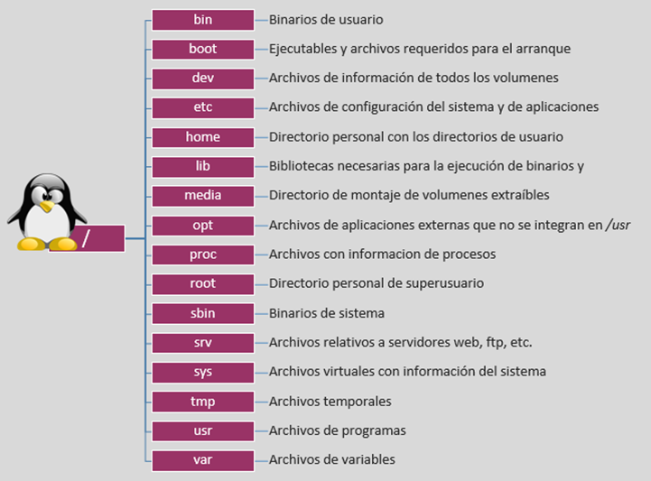

Entornos Linux
En estos primeros pasos veremos algunos conceptos muy básicos que es necesario dominar previo a adquirir cualquier conocimiento relativo a la seguridad de sistemas. Estas nociones básicas nos darán las herramientas principales para desenvolvernos dentro de un sistema y entender los principios de ciberseguridad que se presentarán con posterioridad.
En estos primeros pasos veremos algunos conceptos muy básicos que es necesario dominar previo a adquirir cualquier conocimiento relativo a la seguridad de sistemas. Estas nociones básicas nos darán las herramientas principales para desenvolvernos dentro de un sistema y entender los principios de ciberseguridad que se presentarán con posterioridad.
Estructura de ficheros
Un sistema de archivos, llamado comúnmente File System o FS, determina la organización de los datos en un soporte de almacenamiento, y por tanto, cómo gestiona y organiza el sistema operativo los archivos.
Linux es, como todo Unix, un sistema operativo completamente orientado a archivos. Se representa todo (o casi todo) con un archivo, tanto los datos (archivos de datos de cualquier tipo, como una imagen o un programa) como los periféricos (terminales, ratones, teclado, tarjeta sonido, etc.) o incluso los medios de comunicación (sockets, tuberías nombradas, etc.). Se puede decir que el sistema de archivos es el corazón de cualquier sistema Unix.
Un archivo es una entidad que almacena datos y programas. Se compone de contenido y metadatos (tamaño del archivo, propietario, fecha de creación, permisos). Los archivos están organizados en directorios. Un directorio es un archivo que almacena otros archivos.
Los diferentes tipos de archivos incluyen:
-
Archivos regulares que almacenan datos y programas.
-
Directorios que contienen otros archivos.
-
Archivos especiales que se utilizan para entrada y salida.
Todo en Linux es un archivo, por lo que saber cómo manipularlos es muy importante. Así pues, en la sección correspondiente, veremos las operaciones básicas con archivos mediante el terminal.
El sistema de archivos de Linux es jerárquico. Describe un árbol de directorios y subdirectorios, a partir de un elemento básico llamado raíz o root directory.

Usuarios y grupos
Un usuario es cualquiera que use un ordenador. En este caso, estamos describiendo los nombres que representan a esos usuarios. Puede ser Pol o Martí, y pueden usar los nombres superc0der o Pirate en lugar de su nombre real. Lo único que importa es que la computadora tenga un nombre para cada cuenta que cree, y es este nombre por el que una persona obtiene acceso para usar la computadora. Algunos servicios del sistema también se ejecutan utilizando cuentas de usuario restringidas o privilegiadas.
La administración de los usuarios se realiza con fines de seguridad al limitar el acceso de ciertas maneras específicas. El superusuario (root) tiene acceso completo al sistema operativo y su configuración; está destinado solo para uso administrativo. Los usuarios sin privilegios pueden usar los programas su y sudo para la escalada de privilegios controlada.
Cualquier persona puede tener más de una cuenta, siempre que utilicen un nombre diferente para cada una de ellas. Además, hay algunos nombres reservados que no se pueden usar, como «root».
Los usuarios pueden agruparse en un «grupo» y, del mismo modo, pueden añadirse a un grupo existente para utilizar el acceso privilegiado que dicho grupo concede. Los grupos de usuarios juegan un papel esencial en los sistemas Linux. Gracias a ellos tenemos una manera muy fácil de seleccionar grupos de usuarios a los que se les permite compartir archivos entre ellos. También proporcionan a los administradores de sistemas una manera más efectiva y sencilla de gestionar los privilegios de los usuarios puesto que permiten asignar privilegios a grupos completos en lugar de a usuarios individuales.